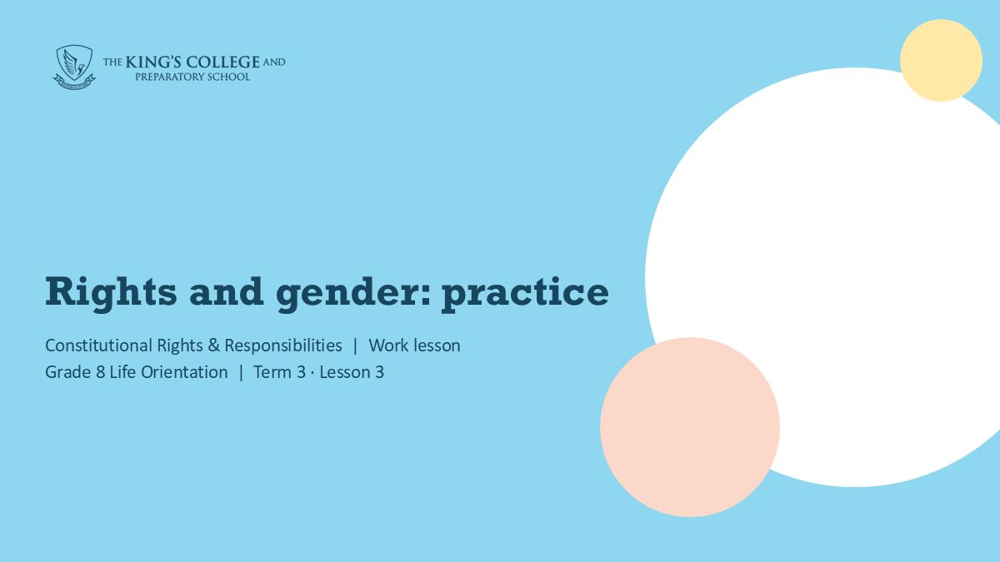

Term 3 · Lesson 3 · Work lesson: written practice
Rights and gender: practice
Start here
Today I will
- Revise human rights and gender equity from my Handbook
- Answer IEB-style questions about a real-life scenario
- Mark my own work and plan how to improve
Quick quiz: give ONE right and its responsibility. What is the difference between equality and equity?
Words to know
- Human rights
- The basic freedoms and protections that every person has, simply because they are human.
- Bill of Rights
- Chapter 2 of the South African Constitution.
- Counter-strategy
- An action taken to stop or fight a human rights violation.
- Gender equity
- Fairness that gives extra support where one group has been disadvantaged.
- Stereotype
- A fixed, oversimplified idea about a group of people.
- GBV
- Gender-based violence: violence or abuse aimed at someone because of their gender.
Slides

Notes
This lesson revises: Term 3 · Lesson 1: Human rights and dignity, Term 3 · Lesson 2: Gender equity and GBV. Read those notes first, then do the written practice.
Know your rights, live your responsibilities, and use the source in every answer.
Written practice
Thabo plays for the boys' basketball team, which always gets the indoor court after school. The new girls' team, which Mia has just joined, has to practise outside on a cracked court with old balls. When Mia asks whether the teams could share the indoor court, a boy in her class laughs: 'Why bother? Girls' sport isn't real sport.' That night someone posts a photo of the girls' team in the class group chat with insulting comments. Thabo disagrees with the boys and wants to help.
- 7.1Define the term 'human rights'.(1 x 1) (1)
- 7.2Name the chapter of the South African Constitution that contains the Bill of Rights.(1 x 1) (1)
- 7.3Identify TWO rights in the Bill of Rights that are affected in the source.(2 x 1) (2)
- 7.4Differentiate between 'gender equality' and 'gender equity'.(1 x 2) (2)
- 7.5Explain why the comment 'Girls' sport isn't real sport' is a stereotype.(1 x 2) (2)
- 7.6Recommend TWO ways in which Thabo can help to make things fairer for the girls' team. In each answer, also give the result.(2 x 2) (4)
- 7.7State TWO forms of gender-based violence.(2 x 1) (2)
- 7.8Assess how fair opportunities for girls' sport could benefit the whole school.(1 x 4) (4)
- 7.9Name TWO places where a learner can get help if they experience gender-based violence.(2 x 1) (2)
Finished early?
Try exam-style questions on rights and gender from the Term 3 exam practice bank.
- Turn to the Term 3 exam practice bank at the back of your Activity Book and find Set B: Gender equity (if you have done it, try Set A: Human rights).
- Answer as many questions as you can in 10 minutes. Read the brackets first.
- Mark your answers in green with the Term 3 exam practice memo on Google Classroom.
- Challenge: in your LO book, recommend ONE counter-strategy for sexist 'jokes' in a group chat, with how it works and the result. (1 x 3) (3)